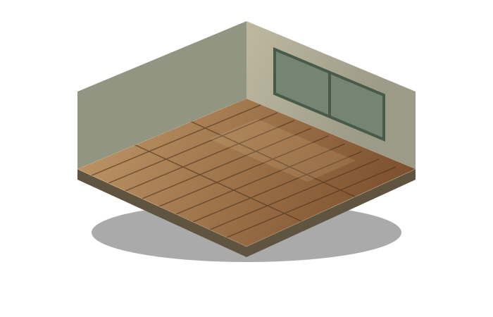
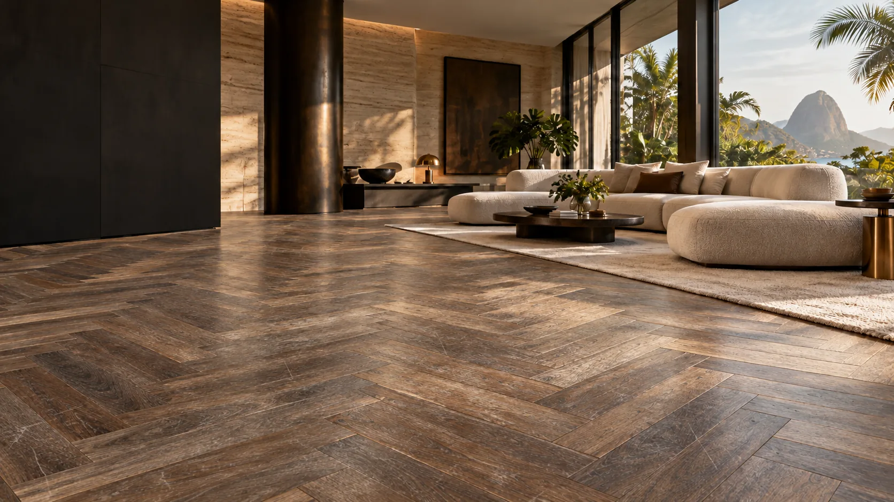

Revele novamente o que a madeira tem de melhor. Uma avaliação do estado do piso ajuda a definir o caminho para renovar sua aparência.
Tacos, parquets e assoalhosMADEIRA. ARQUITETURA. ESSÊNCIA.
O tempo passa.
A beleza
permanece.
Um novo olhar para o seu piso.
Instalação, restauração e cuidado que revelam
a essência de cada ambiente.
Pisos de madeiraInstalação & restauraçãoDecks & áreas externas Cuidado em cada detalhe
A ESSÊNCIA DA LCW
A madeira tem história.
Nosso cuidado revela.
Um piso transforma a forma como você sente um espaço. A textura, o desenho, o toque. Cada detalhe faz parte dessa experiência.
A LCW Pisos trabalha com instalação, restauração, raspagem, polimento e limpeza de pisos de madeira, além de decks. Do primeiro contato à definição do serviço, o ponto de partida é entender o seu ambiente.
Encontre o cuidado idealO QUE FAZEMOS
Cada piso,
uma possibilidade.
Do primeiro assentamento à beleza renovada.
Explore os serviços e encontre o seu próximo passo.
O começo de uma nova atmosfera. Planeje a instalação do seu piso de madeira a partir do ambiente, do material e do desenho desejado.
Um novo piso para o seu espaçoRenove a superfície da madeira e prepare um novo acabamento. A indicação do procedimento depende das condições e das características do seu piso.
Preparação e renovação da superfícieValorize o acabamento e a apresentação do seu piso. Converse com a equipe para entender a opção de cuidado compatível com a superfície existente.
A beleza está no acabamentoUm cuidado pensado para a rotina do seu ambiente. Informe o tipo de piso e o que precisa ser limpo para receber uma orientação sobre o serviço.
Cuidado adequado à sua superfícieLeve a presença da madeira para o lado de fora. Conte se você quer instalar um deck ou renovar o existente para planejarmos o próximo passo.
Conexão entre arquitetura e naturezaDA BASE AO ACABAMENTO
Veja a madeira
ganhar vida.
Role a página e acompanhe cada detalhe da transformação.
O cuidado começa na avaliação e na preparação da superfície que vai receber a madeira.
ESTUDO DE AMBIENTE01 / PREPARAÇÃO

GALERIA DE POSSIBILIDADES
Inspiração que
começa pelo chão.
Interiores que acolhem.
Áreas externas que convidam a ficar.
Ambientes ilustrativos para inspirar.
Projetos reais serão apresentados aqui.
Cada ambiente, uma nova perspectiva.Vamos conversar sobre o seu?
REDESCOBRIR É TRANSFORMAR
O mesmo piso.
Um novo olhar.
Deslize e explore uma possibilidade de renovação.
Simulação ilustrativa de renovação.
A indicação e o resultado dependem da avaliação do piso.

ANTES SIMULAÇÃODEPOIS SIMULAÇÃOArraste com o mouse ou o dedo. No teclado, use as setas.
DO PRIMEIRO CONTATO AO SEU AMBIENTE
O cuidado começa
na conversa.
Uma escolha bem orientada faz parte de um bom projeto.
- 01
Você conta a ideia.
Qual é o ambiente? O que você quer transformar? Fotos e medidas ajudam a entender o seu projeto.
- 02
Avaliamos as possibilidades.
O tipo de madeira e as condições do piso orientam o serviço. Os detalhes são alinhados com a equipe.
- 03
Planejamos o próximo passo.
Escopo, orçamento e disponibilidade são combinados antes de seguir com a execução.
CUIDADO QUE CONTINUA
A beleza também
mora na rotina.
Pequenos hábitos ajudam a conservar a madeira. Reunimos algumas orientações compartilhadas pela LCW.
Mais dicas no Instagram01Limpeza suave, todos os dias
Retire a poeira com vassoura de cerdas macias ou aspirador com acessório adequado. Isso ajuda a evitar que partículas sejam arrastadas sobre o acabamento.
02Menos umidade. Mais cuidado.
Quando o acabamento permitir, use um pano bem torcido, apenas levemente umedecido. Evite encharcar a madeira e seque rapidamente qualquer líquido derramado.
03O produto certo faz diferença
Use produtos compatíveis com o acabamento e siga a orientação do fabricante. Antes de aplicar cera ou um produto para dar brilho, confirme se ele é indicado para o seu piso.
Antes de trocar, vale avaliar.
Em alguns casos, restaurar permite aproveitar a madeira existente e renovar sua aparência. A viabilidade, o custo e o prazo dependem das condições do piso.
VAMOS TRANSFORMAR?
Seu próximo
ambiente começa
com uma conversa.
Conte um pouco sobre o que você precisa.
Nós organizamos os detalhes para você continuar pelo WhatsApp.
São Paulo e outras regiões
Informe sua cidade para consultar o atendimento.
Não sabe qual serviço escolher?
Selecione “Preciso de orientação” e conte sua ideia.
SEU PROJETO, EM POUCOS PASSOS01 / 03
- 1 Seu projeto
- 2 Os detalhes
- 3 Vamos conversar
Como saber se meu piso pode ser restaurado?
A indicação depende do material e das condições do piso. Conte o que você percebe e envie fotos pelo WhatsApp para que a equipe possa orientar a avaliação.
Vocês atendem fora de São Paulo?
A LCW atende São Paulo e outras regiões. Informe sua cidade e seu bairro no pedido para consultar a disponibilidade e as condições de atendimento.
Posso pedir um orçamento sem saber a metragem?
Sim. Marque “Ainda não sei a metragem” no formulário. Você pode começar a conversa com fotos e uma descrição do ambiente, e alinhar as medidas com a equipe.
O formulário já define preço e prazo?
O formulário organiza seu pedido. Valores, prazo, materiais e escopo são definidos pela LCW após entender o seu projeto e, quando necessário, avaliar o local.